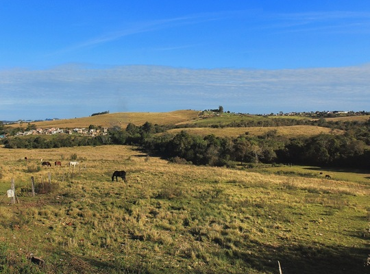
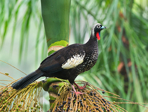
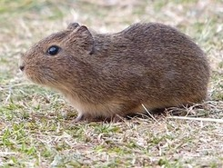
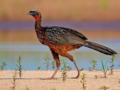
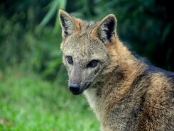
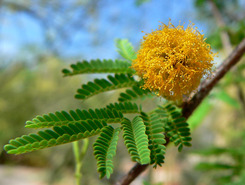
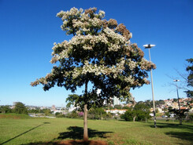

Características

O bioma de Pampa possui áreas com clima úmido e subtropical, se estendendo pelo sul da América do Sul. No Brasil, o bioma ocupa um total de 2% do território nacional, estando apenas localizado no estado de Rio Grande do Sul.
Formados por terrenos planos ou levemente ondulados, os Pampas possuem uma biodiversidade formada principalmente por espécies endêmicas, isso é, próprias do local. Sua vegetação é de pequeno e médio porte, o que se deve ao seu clima com uma amplitude térmica relativamente elevada.
Lista de estados
Rio Grande do Sul
Fauna
(Exemplos)
Perdigão |
João-de-Barro |
Jacutinga |
 |
 |
 |
| Ave da família Tinamídeo com aparência semelhante a de perdizes e codornas. Possui ótima camuflagem devido a sua coloração. | Também chamado de uiracuiar, João-de-Barro é um passário que, como o nome sugere, é hábil no manuseio de barro, o qual é utilizado principalmente para construirem seus ninhos. | Conhecida popularmente como peru do mato. Esta ave possui uma coloração mais destacada e, atualmente, está em risco de extinção. |
Gaturamo-Verdadeira |
Tatu-Mulita |
Preá |
 |
 |
 |
| Ave habitante de uma grande região da América do Sul. Enquanto as fêmeas possuem cor amarelada, os machos são pretos com reflexos azuis no dorso, com a parte inferior amarela. | Menor espécie do gênero Dasypus, possui cabeça comprida e orelhas longas, com uma carapaça alta e ovulada. | Roedor semelhante á capivara, mas menor. Possuem um corpo coberto de pelos de tom cinza ou castanho. |
Jacu |
Graxaim |
|  |  |
| Apelidado de Penélope, uma ave com pelos escuros e seu papo com tônalidade vermelha alaranjada. Esta ave é conhecida pelos seus comportamentos dispersos. | Um canídeo bem semelhante a um lobo, mas em tamanho menor. Muito confundido com o lobo-guará, apesar de apresentarem características bem diferentes. |
Flora
(Características)
A vegetação do pampa é predominantemente composta de gramíneas e plantas rasteiras, apesar de que árvores e arbustos de pequeno porte também possam ser encontrados. De forma geral, a vegetação pode ser definida pelos seguinte três exemplos:
Nhandavaí |
Louro-Pardo |
Babosa-do-Campo |
|  |  |
 |